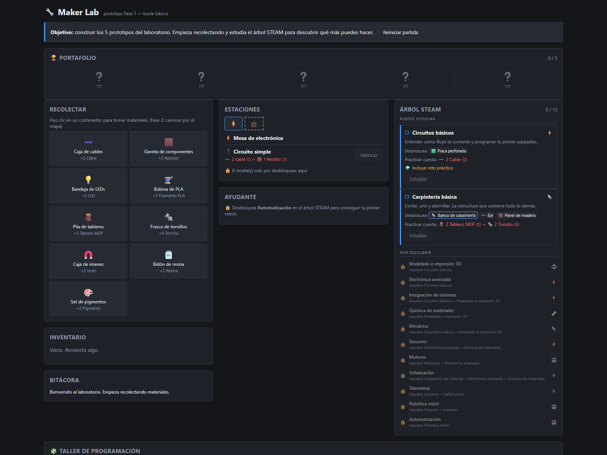
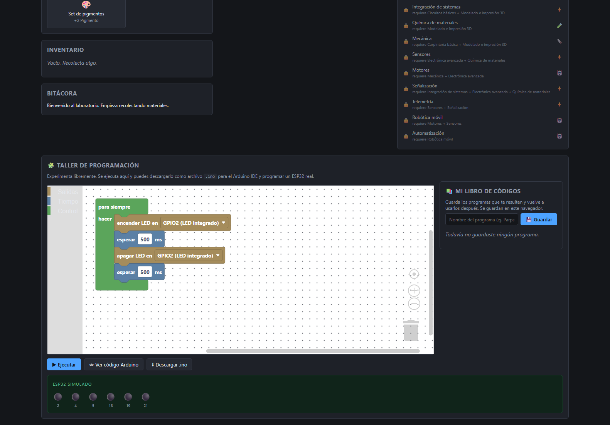
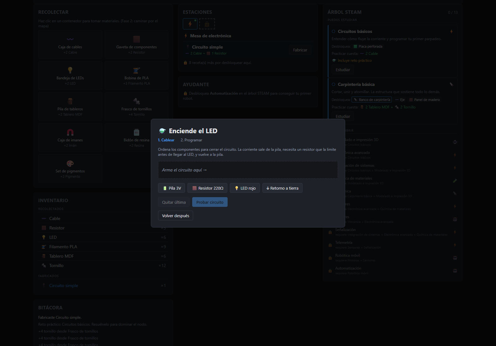

Un juego de laboratorio maker donde programar con bloques exporta código Arduino que funciona de verdad.

Un juego web de laboratorio maker escolar: el estudiante recolecta materiales, fabrica piezas, monta estaciones de trabajo y programa hardware con bloques. La diferencia con un juego de programación por bloques cualquiera es que el código que sale de esos bloques es Arduino real, listo para cargar en un microcontrolador. El puente entre el juego y el taller físico es el punto entero. Trece nodos de conocimiento, cinco estaciones, veintitrés recetas de fabricación y cinco prototipos como meta.
El generador de código Arduino está escrito a mano. Las bibliotecas que hacen esto ya existen, pero todas están abandonadas: la más conocida no se toca desde 2018 y otra ni siquiera tiene licencia clara. Reescribirlo fue más barato que heredar un problema.
Y el juego no se queda en recolectar y fabricar: al estudiar un nodo aparece un reto práctico real. El primero pide armar un circuito (pila, resistencia, LED, retorno a tierra) en el orden correcto y recién después programarlo. O sea, el error de electrónica se comete en pantalla antes de cometerse con componentes de verdad, que es exactamente para lo que sirve un simulador en un aula.
El taller de programación no es decorativo: los bloques se ejecutan contra un ESP32 simulado en pantalla (con sus pines reales, GPIO2 y compañía) y el mismo programa se puede ver como código Arduino o bajar como archivo .ino para cargarlo en una placa física. Ese es el puente completo, de bloque a placa, sin salir del navegador.
Lo más inusual del proyecto no es el juego, es cómo se verifica. Hay dos pruebas generativas: un solver que recorre todo el árbol de progresión y detecta contenido inalcanzable o dependencias circulares antes de que nadie juegue, y un bot que juega la partida completa contra la lógica real del juego. Se comprobó rompiendo a propósito un desbloqueo. Falta el sistema de energía y guardar la partida: hoy el progreso se pierde al recargar, que en una sala de clases es fatal.


{kind=link}
{kind=link}
{kind=link}